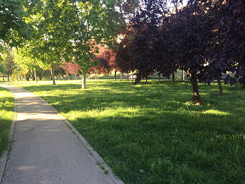

Aire Pur
Parc del canal de la infanta

Està construït seguint el traçat del Canal de la Infanta, del qual pren el nom. Els inicis del parc es remunten a la dècada dels 80, quan es va plantejar la reurbanització de la zona amb el Pla Parcial Fatjó. Amb la venda de la parcel·la on es va construir el Llobregat Centre, el pla va tirar endavant i el parc va ser inaugurat l'any 1995 com a Parc de la Infanta.